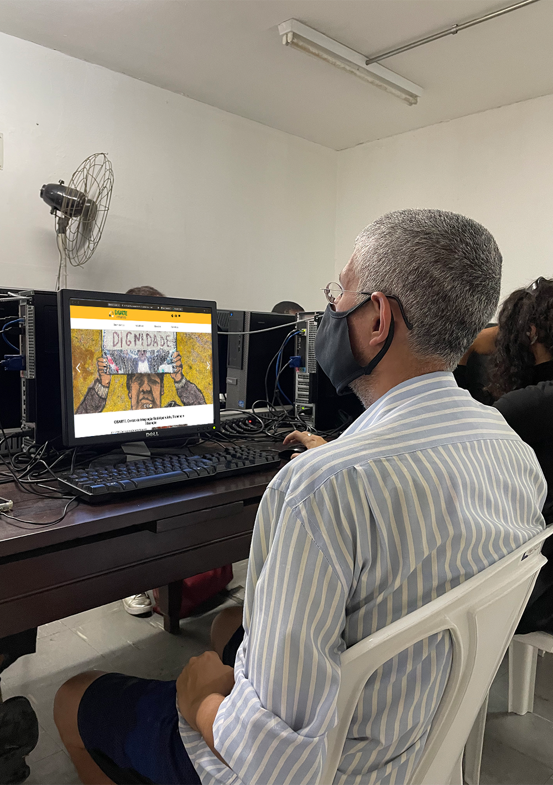

Ao longo dos anos de trabalho, o CISARTE conquistou algumas parcerias que apoiam o projeto regularmente, buscando fornecer recursos que garantem a possibilidade de continuar atuando e ajudando a população de rua.
Através das contribuições que vem dos parceiros, o CISARTE pode investir nas vidas dos seus frequentadores, priorizando o auxílo e bem estar dessas pessoas mediante a equipagem do espaço físico e também a ajuda de profissionais parceiros.
Os parceiros são empresas e organizações que se dispõe a colaborar com o CISARTE regularmente com valores monetários ou com materiais tais como alimentos e equipamentos para as atividades do CISARTE, como objetos de cozinha, informática, salão de beleza, dentista e outras oficinas que o espaço promove.
Toda e qualquer parceria é muito bem vinda para a transformação da realidade das pessoas que estão em situação de vulnerabilidade social. Convidamos todos para fazer parte do nosso círculo solidário.
Email: projeto@cisarte.org.br
Telefone: (11) 2645-2469
WhatsApp: (11) 96358-4568 | (11) 96459-3915
Instagram: @cisarte.rua
Centro de Inclusão pela Arte, Cultura, Trabalho e Educação - CNPJ 37.830.782/0001-04
Viaduto Pedroso, 111 - Bela Vista, São Paulo - SP, CEP: 01322-010
Cisarte® 2022
Entre em contato conosco
projeto@cisarte.org.br / (11) 2645-2469
Aberto de terça a sexta das 9:00 às 17:00